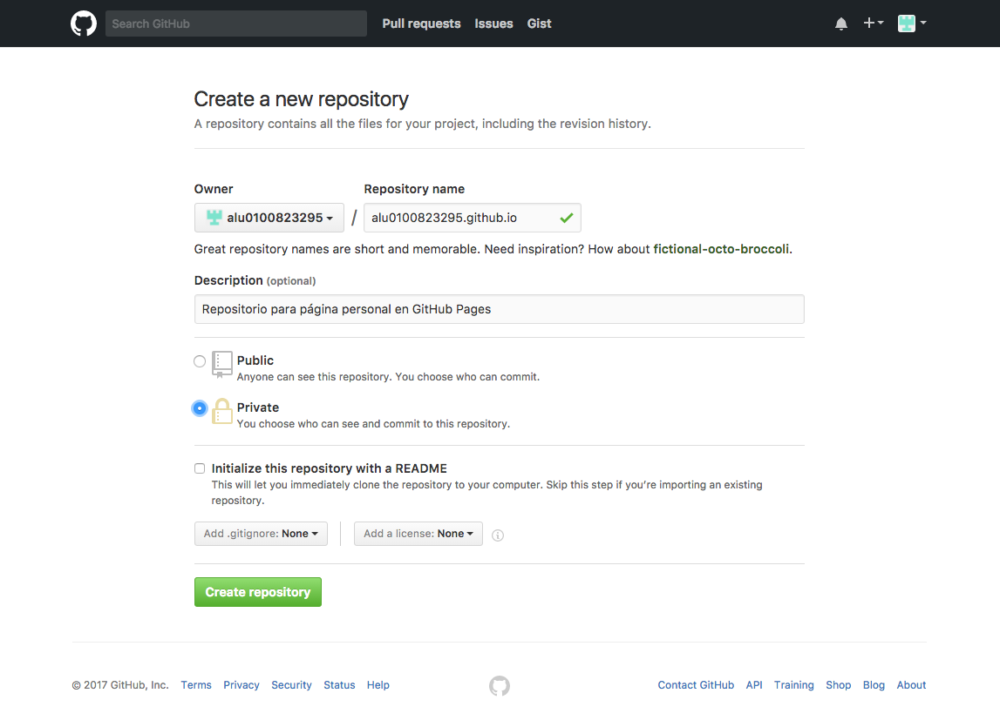
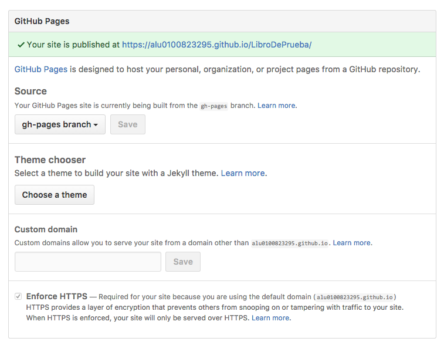

Capítulo 2: GitHub Pages
3.1 ¿Qué es GitHub Pages?
GitHub Pages es el servicio de almacenamiento y publicación de páginas web que pone a nuestra disposición GitHub. Este servicio nos da la posibilidad de poder crear tres tipos de páginas web:
- Página personal de usuario. Esta será una web que nos represente en GitHub como usuario y persona.
- Página de organización. Esta será la página web que respresente a la organización a la que pertenezca
- Página de proyecto. Página que represente al proyecto al que pertenezca.
3.2 ¿Cómo usar GitHub Pages?
3.2.1 Página personal
- Lo primero que haremos es crear un nuevo repositorio con el nombre:
.github.io

- Una vez creado el repositorio, lo que debemos hacer es un push del código al repositorio.

- Automáticamente una vez hecho el push podremos acceder a la página web a través de la URL: https://
.github.io

Nota: El código usado en este ejemplo es una plantilla gratuita disponible en HTML5 UP
3.2.2 Página de organización
Deberemos seguir los pasos descritos para la página personal con las siguientes diferencias:
- El repositorio que debemos crear debe ser de la organización ha de tener el nombre:
.github.io - La página web desplegada estará disponible en la URL: https://
.github.io
3.2.3 Página de proyecto
En el repositorio del proyecto que queramos desplegar la página creamos una rama que se llame gh-pages.
Hacemos push a dicha rama del código de la página.
Nos aseguramos de que en la configuración del repositorio tenemos activado el servicio de GitHub Pages para la rama anteriormente especificada.

- Una vez realizados todos los pasos, podremos acceder a la página del proyecto desde la URL:
https://.github.io/
Nota: Las páginas de proyectos pueden tener distinta "fuente", es decir, no solo se puede publicar el código desde la rama gh-pages sino que se puede cambiar la configuración para que el código este en la rama master bajo el directorio /docs, o también en la propia rama master.
A modo de resumen: